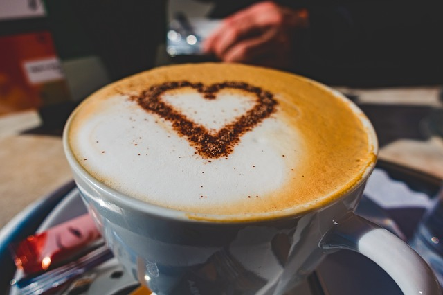

Prepare 1 shot of espresso and pour it into a cup. Then add steamed milk (5 oz or 150ml) and foam from the steamed milk on top. Finish it off by sprinkling chocolate powder on top. Voilá!!
Iced Cappuccinos:
Espresso is mixed with cold frothed milk, and it is a brilliant beverage to drink on a hot day.
Wet Cappuccinos:
Wet coffee has more milk content and less foam content. The coffee has a creamier taste, and it is more like cafe latte with foam on the top.
Dry Cappuccinos:
Dry coffee has less milk content, and the foam on top of the drink is also less. A small quantity of steamed milk is added to the coffee, and it has a strong taste.
Iced Cappuccino
₹ 105
Wet Cappuccino
₹ 97
Dry Cappuccino

₹ 90